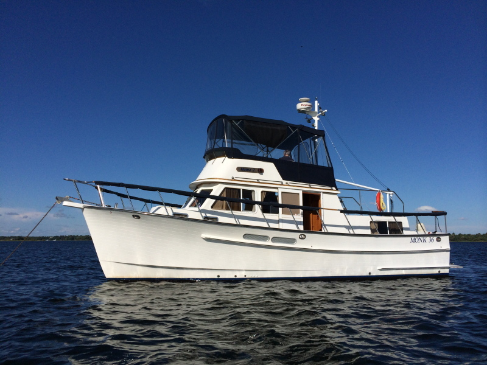

B-Atlas Boat Guide · MONK-36-TR
Monk 36 Trawler Aft Cabin Trawler
1982–2007
The Monk 36 Trawler is an aft-cabin semi-displacement cruiser designed by Ed Monk Jr. and produced first in Taiwan and later in Nova Scotia. Its enduring layout combines a single diesel, protected propeller, two-stateroom accommodation, galley-up salon and flybridge/lower-helm operation in a manageable 36-foot package.

- Length
- 36 ft
- Beam
- 13 ft
- Draft
- 4 ft
- Hull behaviour
- Semi-Displacement
- Fuel
- Diesel
- Propulsion
- Shaft
- Engine configuration
- Single Inboard
- Boat family
- Trawler
- Construction
- Solid fiberglass hull; deck and superstructure details vary between Taiwan-built and Nova Scotia-built generations
Best for
- Couples seeking a traditional 36-foot aft-cabin trawler
- Great Loop and extended coastal cruisers prioritizing economy
- Owners comfortable maintaining an older single-diesel boat
Trade-offs
- Early boats carry more exterior teak and associated upkeep
- Production-location and interior details changed after the early 1990s
- Single-screw handling benefits from thruster assistance in difficult conditions
Known concerns
- No model-specific concern has been promoted to B-Atlas’s evidence threshold. This does not mean the model has no age-, condition- or hull-specific risks.
Inspection focus
- Confirm Taiwan versus Nova Scotia production and model year
- Moisture-test decks, windows, rail bases and exterior teak penetrations
- Inspect fuel/water/waste tanks, hoses and sanitation systems
- Inspect engine cooling, exhaust, shaft, rudder, skeg and steering
- Review electrical and generator upgrades
Continue researching
Related boat models
Endeavour TrawlerCat 36 Power Catamaran
36 ft · Catamaran
Island Gypsy 36 Classic Classic
36 ft · Semi-Displacement
Marine Trader 36 Double Cabin Double Cabin
36 ft · Semi-Displacement
Universal 36 Tri-Cabin Trawler Tri-Cabin
36 ft · Semi-Displacement
Willard Vega 36 Standard Cruiser Flybridge Sedan
36 ft · Displacement
Beneteau Swift Trawler 34 Flybridge or Sedan
36.02 ft · Semi-Displacement
About this record
B-Atlas preserves uncertainty: missing information remains unknown rather than being treated as a negative. Specifications and guidance describe the model record; individual boats can differ by year, equipment, refit and condition.